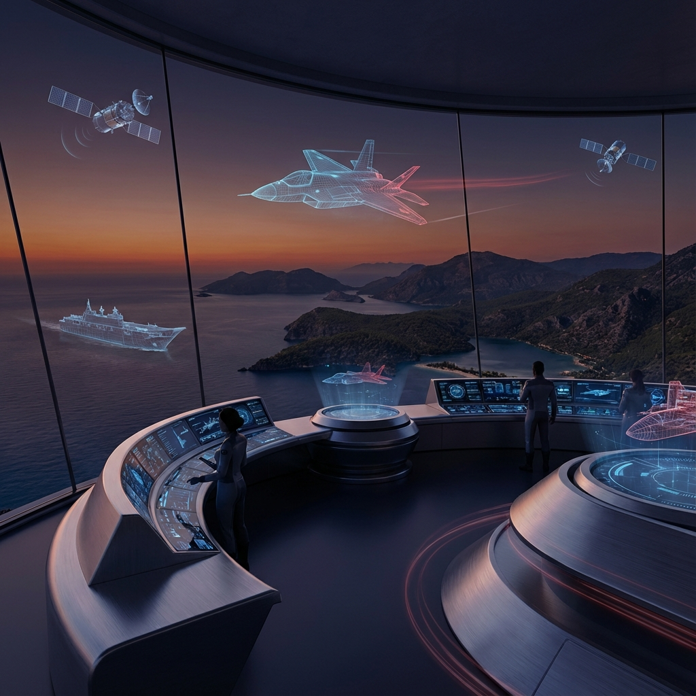

Milli Teknoloji Envanteri v4.0
ÇELİK KUBBE & C4I AKTİF
STRATEJİK SAVUNMA & HAVACILIK KOMUTA MERKEZİ
🖼️ GALERİ GÖRÜNÜMÜ
📋 TABLO GÖRÜNÜMÜ
🔊 SES: AÇIK
⛶ TAM EKRAN
📄 DURUM RAPORU
💾 JSON
📊 CSV
🛡️ TOPLAM VARLIK
--
Doğrulanmış Milli Sistem
🧬 OLGUNLUK (TRL)
--
Ortalama Hazırlık (/9.00)
⚡ SERİ ÜRETİM
--
TRL 8-9 Harbe Hazır Sistem
🔬 İLERİ PROTOTİP
--
TRL 6-7 Test & Kalifikasyon
🏢 KURULUŞLAR
--
Vakıf & Özel Savunma Devi
🌐 DOMINION
4
Hava • Elektronik • Kara • Deniz
📊 DOMINION DAĞILIMI
🚀 TRL OLGUNLUK EĞRİSİ
🏆 LİDER ÜRETİCİLER (TOP 7)
📡 ÇELİK KUBBE RADAR AĞI
🔍
TÜMÜ
🌌 HAVA & UZAY
📡 ELEKTRONİK & AI
🚜 KARA & ZIRH
⚓ MAVİ VATAN
🧬 TÜM TRL SEVİYELERİ
TRL 9 (Envanter / Combat Proven)
TRL 8 (Kalifiye / Ön Seri Üretim)
TRL 7 (Prototip Uçuş / Saha Testi)
TRL 1-6 (Ar-Ge & Blok İnşa)
🏢 TÜM ÜRETİCİLER
Gösterilen: -- platform
💡 İpucu: Kartlara tıklayarak teknik spec-sheet detaylarını açabilir veya "Karşılaştır" kutucuğuyla 3 platformu kıyaslayabilirsiniz.
GÖRSEL
PLATFORM ADI
ÜRETİCİ / KURUM
DOMINION
SINIF & STRATEJİK KATEGORİ
DURUM
TRL
KIYASLA
⚔️ TAKTİK KIYASLAMA:
KARŞILAŞTIR ↗
TEMİZLE
×

--
--
DOMINION
--
TRL OLGUNLUK
--
PROGRAM DURUMU
--
SINIF & KATEGORİ
--
--
📄 TAM SPEC-SHEET & MİMARİ DİYAGRAMI AÇ (README.md) ↗
×
⚔️ Stratejik Platform Karşılaştırma Matrisi
Seçilen Milli Sistemlerin Teknik ve Doktriner Kıyaslaması